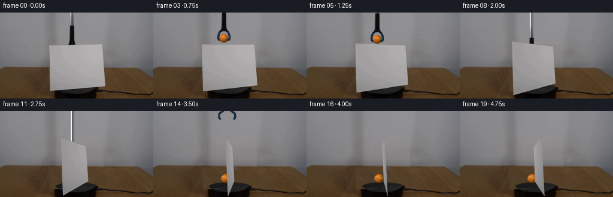
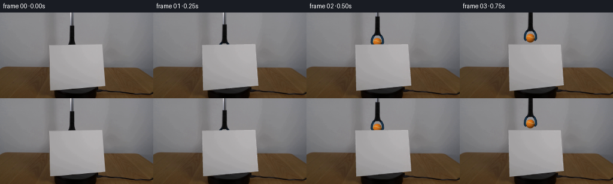
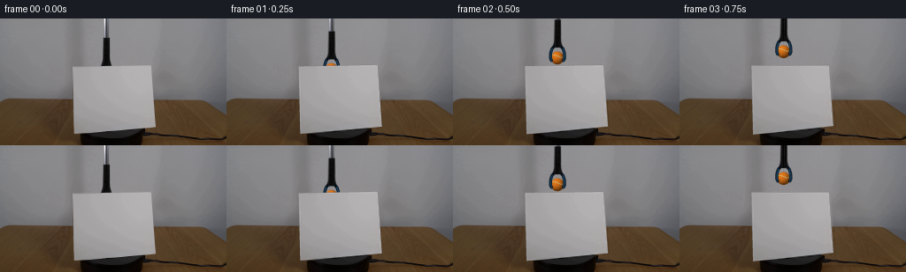

CODING AGENTS AS PIXEL WORLD MODELS
traex/GPT-6-Astra · 0005
点击播放 · 原生 RGB 像素
逐轮保存的候选
回放视频、检查图与代码变化。
每份候选均可单独播放。实际图片检查记录在下方工具轨迹中。
候选 01播放与检查图
点击播放 · 原生 RGB 像素


展开代码变化
--- 上一保存版本
+++ 本次保存版本
@@ -0,0 +1,250 @@
+from pathlib import Path
+import numpy as np
+import cv2
+from PIL import Image
+import artifact_io
+
+ROOT=Path(__file__).resolve().parent
+W,H=256,144
+S=4
+WS,HS=W*S,H*S
+rng=np.random.default_rng(19)
+original=np.asarray(Image.open(ROOT/'first_frame.png').convert('RGB'))
+f0=original.astype(np.float32)
+
+def resize(a):
+ return cv2.resize(a,(WS,HS),interpolation=cv2.INTER_CUBIC)
+
+def poly_mask(points,blur=0):
+ m=np.zeros((HS,WS),np.float32)
+ cv2.fillPoly(m,[np.round(np.asarray(points)*S).astype(np.int32)],1,lineType=cv2.LINE_AA)
+ if blur: m=cv2.GaussianBlur(m,(0,0),blur*S)
+ return m
+
+# Recover the plane of the blank cardstock from its four visible corners.
+uv=np.float32([[-.5,1],[.5,1],[.5,0],[-.5,0]])
+quad=np.float32([[81.65,54.55],[170.65,52.65],[175.60,122.65],[83.55,130.25]])
+plane=cv2.getPerspectiveTransform(uv,quad)
+# A pinhole camera recovered from the orthogonal edges, no rendering engine.
+cx,cy=128.,72.
+a=plane[:2,0]-np.array([cx,cy])*plane[2,0]
+b=plane[:2,1]-np.array([cx,cy])*plane[2,1]
+focal=np.sqrt(max(10000.,-np.dot(a,b)/(plane[2,0]*plane[2,1])))
+K=np.array([[focal,0,cx],[0,focal,cy],[0,0,1.]])
+P=np.linalg.inv(K)@plane
+width=np.linalg.norm(P[:,0]); height=np.linalg.norm(P[:,1])
+right=P[:,0]/width; up=P[:,1]/height
+front=np.cross(right,up);front/=np.linalg.norm(front)
+origin=P[:,2]
+depth_column=K@front*width
+
+# Backdrop continuation, synthesized only from visible RGB in this frame.
+clean=f0.copy()
+wall=f0.copy()
+profile=np.median(f0[42:49],axis=0)
+# Remove the tool from the reference row.
+for x in range(113,129):
+ t=(x-112)/17
+ profile[x]=profile[112]*(1-t)+profile[129]*t
+sideL=f0[:94,58:76].mean(axis=1)
+sideR=f0[:94,182:204].mean(axis=1)
+refL=sideL[42:49].mean(0);refR=sideR[42:49].mean(0)
+for y in range(52,94):
+ for x in range(78,180):
+ u=np.clip((x-74)/108,0,1)
+ d=(sideL[y]-refL)*(1-u)+(sideR[y]-refR)*u
+ wall[y,x]=profile[x]+d
+wall+=rng.normal(0,.33,wall.shape[:2])[...,None]
+# Horizontal-grain continuation of the tabletop, using a visible patch.
+table=f0.copy()
+for y in range(92,H):
+ left=f0[y,20:50].mean(0)
+ rightcol=f0[y,177:205].mean(0)
+ for x in range(79,180):
+ u=(x-79)/101
+ shade=left*(1-u)+rightcol*u
+ patch=f0[y,182+(x-79)%61]
+ residual=patch-f0[y,182:243].mean(0)
+ table[y,x]=shade+residual*.60
+# The wall/table boundary is slightly sloped in the original shot.
+yy,xx=np.mgrid[:H,:W]
+edge=91.2+.014*xx
+blend=np.clip((yy-edge+.6)/1.1,0,1)[...,None]
+recon=wall*(1-blend)+table*blend
+
+# Rebuild the hidden upper face of the existing low black platform.
+recon_hi=resize(recon)
+X,Y=np.meshgrid((np.arange(WS)+.5)/S,(np.arange(HS)+.5)/S)
+ell=((X-127.4)/35.4)**2+((Y-126.1)/7.1)**2
+platform=np.clip((1-ell)*S*2,0,1)
+platform_col=np.zeros_like(recon_hi)+np.array([28.,27.,28.])
+platform_col+=((X-127.4)*.09-(Y-126.1)*.7)[...,None]
+platform_col+=resize(rng.normal(0,.7,(H,W)).astype(np.float32))[...,None]
+recon_hi=recon_hi*(1-platform[...,None])+platform_col*platform[...,None]
+# Visible edges and all other fixed objects are retained verbatim.
+card_remove=poly_mask([[81.1,53.6],[171.1,51.8],[176.7,123.8],[83.1,131.0]])
+card_remove=cv2.GaussianBlur(card_remove,(0,0),.22*S)
+base_hi=resize(f0)
+base_hi=base_hi*(1-card_remove[...,None])+recon_hi*card_remove[...,None]
+# The thin metal shaft and black housing are independently cut from the input.
+shaft_outline=[[116.6,-2],[123.7,-2],[124.1,20.8],[124.6,44.5],
+ [125.5,49.5],[126.8,54.0],[113.4,54.0],[113.8,51.2],
+ [115.2,47.3],[115.6,24],[116.2,20.4]]
+tool_mask=poly_mask(shaft_outline)
+tool_mask=cv2.GaussianBlur(tool_mask,(0,0),.16*S)
+tool_mask*=np.clip((54.0-Y)*S,0,1)
+tool_bg=f0.copy()
+for y in range(55):
+ for x in range(111,130):
+ u=(x-111)/19
+ tool_bg[y,x]=f0[y,111]*(1-u)+f0[y,130]*u
+bg_tool_hi=resize(tool_bg)
+base_hi=base_hi*(1-tool_mask[...,None])+bg_tool_hi*tool_mask[...,None]
+tool_rgb=resize(f0)
+# Texture atlas from the original paper. Keep its real shading and faint grain.
+TW,TH=500,420
+U,V=np.meshgrid(np.linspace(-.5,.5,TW),np.linspace(1,0,TH))
+uv_tex=np.stack([U,V],-1).astype(np.float32)
+uv_safe=uv_tex.copy()
+uv_safe[...,0]=np.clip(uv_safe[...,0],-.487,.487)
+uv_safe[...,1]=np.clip(uv_safe[...,1],.014,.977)
+mapxy=cv2.perspectiveTransform(uv_safe.reshape(1,-1,2),plane).reshape(TH,TW,2)
+texture=cv2.remap(f0,mapxy[...,0],mapxy[...,1],cv2.INTER_CUBIC)
+# Below-edge pixels must not leak black platform color into the paper.
+texture=np.clip(texture,135,190)
+
+
+def smooth(t):
+ t=np.clip(t,0.,1.)
+ return t*t*(3-2*t)
+
+def overlay(canvas,layer,alpha):
+ return canvas*(1-alpha[...,None])+layer*alpha[...,None]
+
+def project(p):
+ v=K@p
+ return v[:2]/v[2]
+
+# A rest position behind the plane, outside the region swept by its rotation.
+ball_base=origin-front*.17+right*(-.045)
+radius_world=.054
+
+def sphere(canvas,center,radius,turn=0):
+ bx,by=center
+ ux=(X-bx)/radius;uy=(Y-by)/radius
+ rr=ux*ux+uy*uy
+ nz=np.sqrt(np.clip(1-rr,0,1))
+ mask=np.clip((1-np.sqrt(rr))*radius*S+.45,0,1)
+ light=np.clip(-.35*ux-.52*uy+.779*nz,0,1)
+ shade=.41+.59*light
+ felt=(np.sin(ux*148+uy*83)*np.sin(uy*159-ux*32)+np.sin(ux*337-uy*291))*.8
+ col=np.array([229.,121.,27.])[None,None,:]*shade[...,None]
+ col+=felt[...,None]
+ col+=((nz**14)*2)[...,None]
+ # Tennis-ball seam: a spherical closed sinusoid, clipped to the visible side.
+ seam=np.zeros((HS,WS),np.uint8)
+ ts=np.linspace(0,2*np.pi,900)
+ lat=.58*np.sin(2*ts)
+ p=np.stack([np.cos(lat)*np.cos(ts),np.sin(lat),np.cos(lat)*np.sin(ts)],1)
+ ax=.46;az=-.48+turn
+ Rx=np.array([[1,0,0],[0,np.cos(ax),-np.sin(ax)],[0,np.sin(ax),np.cos(ax)]])
+ Rz=np.array([[np.cos(az),-np.sin(az),0],[np.sin(az),np.cos(az),0],[0,0,1]])
+ p=p@Rx.T@Rz.T
+ coords=np.round((p[:,:2]*radius+np.array([bx,by]))*S).astype(np.int32)
+ for j in range(len(p)-1):
+ if p[j,2]>.025 and p[j+1,2]>.025:
+ cv2.line(seam,tuple(coords[j]),tuple(coords[j+1]),255,max(1,round(radius*.077*S)),cv2.LINE_AA)
+ sa=seam.astype(np.float32)/255*.87
+ seamcol=np.array([204.,185.,118.])[None,None,:]*(.57+.43*light[...,None])
+ col=col*(1-sa[...,None])+seamcol*sa[...,None]
+ return overlay(canvas,col,mask)
+
+def draw_tool(canvas,bx,by,opening):
+ # The tool's head remains rigidly attached to the moving ball until release.
+ dx=bx-120;dy=by-65.5
+ mat=np.float32([[1,0,dx*S],[0,1,dy*S]])
+ alpha=cv2.warpAffine(tool_mask,mat,(WS,HS),flags=cv2.INTER_LINEAR)
+ premul=cv2.warpAffine(tool_rgb*tool_mask[...,None],mat,(WS,HS),flags=cv2.INTER_LINEAR)
+ canvas=canvas*(1-alpha[...,None])+premul
+ if dy>0:
+ # Continue the long shaft through the top edge when the grabber is low.
+ extendmask=poly_mask([[116.6+dx,-2],[123.7+dx,-2],[123.7+dx,dy],[116.6+dx,dy]])
+ sh=np.zeros_like(canvas)
+ for j in range(WS):
+ xs=np.clip(j/S-dx,117,123)
+ sh[:,j]=f0[1,int(xs)]
+ canvas=overlay(canvas,sh,extendmask)
+ # Molded blue jaw tips curve around the sides of the felt ball.
+ jaw=np.zeros((HS,WS,3),np.float32)
+ jm=np.zeros((HS,WS),np.uint8)
+ def line(points,color,thick):
+ pp=np.round(np.asarray(points)*S).astype(np.int32)
+ cv2.polylines(jaw,[pp],False,color,max(1,round(thick*S)),cv2.LINE_AA)
+ cv2.polylines(jm,[pp],False,255,max(1,round(thick*S)),cv2.LINE_AA)
+ gap=opening*4.0
+ for side in [-1,1]:
+ p=[(bx+side*3.5,by-13.5),(bx+side*6.8,by-10.5),
+ (bx+side*(9.0+gap),by-5.8),(bx+side*(9.5+gap),by+.3),
+ (bx+side*(7.8+gap),by+3.0)]
+ line(p,(12.,17.,24.),2.7)
+ line(p[1:],(17.,45.,70.),1.65)
+ q=[(px-side*.4,py-.3) for px,py in p[1:]]
+ line(q,(28.,67.,92.),.55)
+ ja=jm.astype(np.float32)/255
+ return overlay(canvas,jaw,ja)
+
+frames=[original.copy()]
+for i in range(1,20):
+ t=i/4
+ # Briefly raise the already gripped ball above the top edge, then lower it.
+ if t<.75:
+ ballheight=.355+(.56-.355)*smooth(t/.75)
+ elif t<1.1:
+ ballheight=.56
+ elif t<2.65:
+ ballheight=.56+(.054-.56)*smooth((t-1.1)/1.55)
+ else:
+ ballheight=.054
+ ballpoint=ball_base+up*ballheight
+ bc=project(ballpoint)
+ br=focal*radius_world/ballpoint[2]
+ angle=np.deg2rad(90*smooth(t/4.7))
+ ht=plane.copy()
+ ht[:,0]=plane[:,0]*np.cos(angle)-depth_column*np.sin(angle)
+ q=cv2.perspectiveTransform(uv[None],ht)[0]
+ canvas=base_hi.copy()
+ # A soft, stationary contact shadow strengthens as the ball approaches rest.
+ contact=project(ball_base)
+ contact_a=.22*(1-smooth((ballheight-.054)/.14))
+ sh=contact_a*np.exp(-((X-contact[0])/9.4)**2-((Y-contact[1]) / 2.15)**2)
+ canvas*=1-sh[...,None]
+ canvas=sphere(canvas,bc,br,.025*smooth(t/2.65))
+ if t<4.1:
+ if t<=2.75:
+ tc=bc;opening=smooth((t-2.6)/.2)
+ else:
+ lift=smooth((t-2.75)/1.20)
+ tc=bc+np.array([3.2*lift,-151*lift]);opening=1.
+ canvas=draw_tool(canvas,float(tc[0]),float(tc[1]),opening)
+ # Thin physical paper edge, followed by the textured, perspective-projected face.
+ src=np.float32([[0,0],[TW-1,0],[TW-1,TH-1],[0,TH-1]])
+ transform=cv2.getPerspectiveTransform(src,q.astype(np.float32)*S)
+ paper=cv2.warpPerspective(texture,transform,(WS,HS),flags=cv2.INTER_CUBIC,borderMode=cv2.BORDER_REPLICATE)
+ signed_area=np.cross(q[1]-q[0],q[3]-q[0])
+ lighting=1-.10*np.sin(angle)
+ if signed_area<0:lighting=.90
+ paper=paper*lighting
+ pm=poly_mask(q)
+ pm=cv2.GaussianBlur(pm,(0,0),.16*S)
+ edge_layer=canvas.copy()
+ cv2.polylines(edge_layer,[np.round(q*S).astype(np.int32)],True,(119.,118.,118.),max(1,round(.4*S)),cv2.LINE_AA)
+ canvas=overlay(edge_layer,paper,pm)
+ frame=cv2.resize(canvas,(W,H),interpolation=cv2.INTER_AREA)
+ frames.append(np.clip(np.rint(frame),0,255).astype(np.uint8))
+
+frames=np.stack(frames)
+assert np.array_equal(frames[0],original)
+(ROOT/'.tmp').mkdir(exist_ok=True)
+np.save(ROOT/'.tmp'/'candidate_rgb.npy',frames)
+artifact_io.save(frames,ROOT)
+print('Saved',frames.shape,frames.dtype,'to',ROOT)
候选 02播放与检查图
点击播放 · 原生 RGB 像素


展开代码变化
--- 上一保存版本
+++ 本次保存版本
@@ -183,9 +183,9 @@
cv2.polylines(jm,[pp],False,255,max(1,round(thick*S)),cv2.LINE_AA)
gap=opening*4.0
for side in [-1,1]:
- p=[(bx+side*3.5,by-13.5),(bx+side*6.8,by-10.5),
- (bx+side*(9.0+gap),by-5.8),(bx+side*(9.5+gap),by+.3),
- (bx+side*(7.8+gap),by+3.0)]
+ p=[(bx+side*3.5,by-13.5),(bx+side*6.2,by-10.5),
+ (bx+side*(7.7+gap),by-5.8),(bx+side*(8.0+gap),by+.3),
+ (bx+side*(6.8+gap),by+3.0)]
line(p,(12.,17.,24.),2.7)
line(p[1:],(17.,45.,70.),1.65)
q=[(px-side*.4,py-.3) for px,py in p[1:]]
@@ -194,18 +194,21 @@
return overlay(canvas,jaw,ja)
frames=[original.copy()]
+resampled_original=cv2.resize(resize(f0),(W,H),interpolation=cv2.INTER_AREA)
for i in range(1,20):
t=i/4
# Briefly raise the already gripped ball above the top edge, then lower it.
if t<.75:
- ballheight=.355+(.56-.355)*smooth(t/.75)
+ ballheight=.395+(.60-.395)*smooth(t/.75)
elif t<1.1:
- ballheight=.56
+ ballheight=.60
elif t<2.65:
- ballheight=.56+(.054-.56)*smooth((t-1.1)/1.55)
+ ballheight=.60+(.054-.60)*smooth((t-1.1)/1.55)
else:
ballheight=.054
- ballpoint=ball_base+up*ballheight
+ # Place it far enough to the left that the turning sheet cannot strike it.
+ current_base=ball_base-right*.045*smooth((t-1.1)/1.55)
+ ballpoint=current_base+up*ballheight
bc=project(ballpoint)
br=focal*radius_world/ballpoint[2]
angle=np.deg2rad(90*smooth(t/4.7))
@@ -214,7 +217,7 @@
q=cv2.perspectiveTransform(uv[None],ht)[0]
canvas=base_hi.copy()
# A soft, stationary contact shadow strengthens as the ball approaches rest.
- contact=project(ball_base)
+ contact=project(current_base)
contact_a=.22*(1-smooth((ballheight-.054)/.14))
sh=contact_a*np.exp(-((X-contact[0])/9.4)**2-((Y-contact[1]) / 2.15)**2)
canvas*=1-sh[...,None]
@@ -230,7 +233,8 @@
src=np.float32([[0,0],[TW-1,0],[TW-1,TH-1],[0,TH-1]])
transform=cv2.getPerspectiveTransform(src,q.astype(np.float32)*S)
paper=cv2.warpPerspective(texture,transform,(WS,HS),flags=cv2.INTER_CUBIC,borderMode=cv2.BORDER_REPLICATE)
- signed_area=np.cross(q[1]-q[0],q[3]-q[0])
+ v1,v2=q[1]-q[0],q[3]-q[0]
+ signed_area=v1[0]*v2[1]-v1[1]*v2[0]
lighting=1-.10*np.sin(angle)
if signed_area<0:lighting=.90
paper=paper*lighting
@@ -239,7 +243,7 @@
edge_layer=canvas.copy()
cv2.polylines(edge_layer,[np.round(q*S).astype(np.int32)],True,(119.,118.,118.),max(1,round(.4*S)),cv2.LINE_AA)
canvas=overlay(edge_layer,paper,pm)
- frame=cv2.resize(canvas,(W,H),interpolation=cv2.INTER_AREA)
+ frame=f0+cv2.resize(canvas,(W,H),interpolation=cv2.INTER_AREA)-resampled_original
frames.append(np.clip(np.rint(frame),0,255).astype(np.uint8))
frames=np.stack(frames)
候选 03播放与检查图
可观测工具轨迹
实际执行的命令与返回图片。
命令 1exit 0
/bin/bash -lc "ls -la && cat prompt.txt && printf '\\n---RULES---\\n' && cat GENERATION_RULES.md"
命令 2exit 0
/bin/bash -lc "cat artifact_io.py && python - <<'PY'
from PIL import Image
import numpy as np
im=np.array(Image.open('first_frame.png'))
print('shape',im.shape)
print('range',im.min((0,1)),im.max((0,1)))
# summarize rgb at 4x4 resolution coarse categories
for y in range(0,144,4):
s=''
for x in range(0,256,4):
r,g,b=im[y:y+4,x:x+4].mean((0,1))
if r>145 and r>g*1.3 and g>b*1.3:c='O'
elif b>r*1.25 and b>g*1.05:c='B'
elif max(r,g,b)<50:c='#'
elif max(r,g,b)<95:c='d'
elif r>g*1.12 and g>b*1.08:c='w'
elif min(r,g,b)>190:c='.'
elif min(r,g,b)>130:c=':'
else:c='-'
s+=c
print(f'{y:03}',s)
PY"命令 3exit 0
/bin/bash -lc "python - <<'PY'
from PIL import Image
import numpy as np
im=np.array(Image.open('first_frame.png')).astype(float)
for y in [0,20,30,40,48,52,56,60,72,90,100,120,128,136]:
print('\\ny',y)
print([(x,tuple(im[y,x].astype(int))) for x in range(0,256,8)])
print('most orange:',sorted([(im[y,x,0]-im[y,x,2],x,y,im[y,x].astype(int).tolist()) for y in range(90) for x in range(256)],reverse=True)[:40])
# unicode ascii monochrome 2 by 2
levels='@%#*+=-:. '
for y in range(0,144,2):
vals=im[y:y+2].mean(0).reshape(128,2,3).mean((1,2))
print(f'{y:03d} '+''.join(levels[min(9,int(a/256*10))] for a in vals))
PY"命令 4exit 0
/bin/bash -lc "python - <<'PY'
import numpy as np
from PIL import Image
im=np.array(Image.open('first_frame.png'))
# card bright pixels runs
for y in range(48,136):
xs=np.where((im[y,:,0]>140)&(im[y,:,1]>138)&(np.arange(256)>75)&(np.arange(256)<180))[0]
if len(xs):print(y,xs[0],xs[-1],im[y,xs[0]].tolist(),im[y,xs[-1]].tolist())
print('tool crop luminance')
c=' .:-=+*#%@'
for y in range(0,59):
print(f'{y:02}', ''.join(c[min(9,int(a)//16)] for a in im[y,110:131].mean(-1)))
print('tool pixels')
for y in [0,10,20,22,26,40,48,52,54,55]:print(y, im[y,114:126].tolist())
print('packages')
import cv2,scipy
print(cv2.__version__,scipy.__version__)
PY"命令 5exit 0
/bin/bash -lc "python - <<'PY'
from PIL import Image
import numpy as np
im=np.array(Image.open('first_frame.png')).astype(float)
for y in range(114,144):
print(y,''.join('C' if v[0]>120 and v[1]>100 else ('P' if max(v)-min(v)<15 and v[0]<55 else ('.' if v[0]>65 else '-')) for v in im[y,78:184]))
print('row edges exact top of card, r')
for y in range(50,57): print(y,im[y,78:177:2,0].astype(int).tolist())
PY"命令 6exit 0
/bin/bash -lc "python - <<'PY'
import cv2,numpy as np
src=np.float32([[-.5,1],[.5,1],[.5,0],[-.5,0]])
dst=np.float32([[81.7,54.4],[170.65,52.9],[175.6,122.5],[83.7,130.25]])
H=cv2.getPerspectiveTransform(src,dst); print(H)
print('corners')
for deg in [0,15,30,45,60,75,90,105,120]:
a=np.deg2rad(deg)
D=np.array([-10.,-24.,.16])
h=H.copy();h[:,0]=H[:,0]*np.cos(a)+D*np.sin(a)
pts=cv2.perspectiveTransform(src[None],h)[0]
print(deg,pts.round(1).tolist())
PY"命令 7exit 0
/bin/bash -lc "python - <<'PY'
import cv2,numpy as np
uv=np.float32([[-.5,1],[.5,1],[.5,0],[-.5,0]])
q=np.float32([[81.7,54.4],[170.65,52.9],[175.6,122.5],[83.7,130.25]])
H=cv2.getPerspectiveTransform(uv,q)
cx,cy=128,72
p=H[:2,0]-np.array([cx,cy])*H[2,0];r=H[:2,1]-np.array([cx,cy])*H[2,1]
f=np.sqrt(-p@r/(H[2,0]*H[2,1]));K=np.array([[f,0,cx],[0,f,cy],[0,0,1.]])
N=np.linalg.inv(K)@H
n0=np.linalg.norm(N[:,0]);n1=np.linalg.norm(N[:,1]);R0=N[:,0]/n0;R1=N[:,1]/n1;R2=np.cross(R0,R1)
print('f',f,'R0',R0,'R1',R1,'R2',R2,'ratio',n0/n1)
D=K@R2*n0
print('depth',D)
for sign in [1,-1]:
for deg in [0,10,20,30,45,60,75,90]:
a=np.deg2rad(deg)*sign
ht=H.copy();ht[:,0]=H[:,0]*np.cos(a)+D*np.sin(a)
pts=cv2.perspectiveTransform(uv[None],ht)[0]
print(sign,deg,pts.round(1).tolist())
PY"命令 8exit 0
/bin/bash -lc "python - <<'PY'
import numpy as np,cv2
src=np.float32([[-.5,1],[.5,1],[.5,0],[-.5,0]]);dst=np.float32([[81.7,54.4],[170.65,52.9],[175.6,122.5],[83.7,130.25]])
H=cv2.getPerspectiveTransform(src,dst);f=182.3142;K=np.array([[f,0,128],[0,f,72],[0,0,1.]])
N=np.linalg.inv(K)@H;W=np.linalg.norm(N[:,0]);h=np.linalg.norm(N[:,1]);R0=N[:,0]/W;up=N[:,1]/h;front=np.cross(R0,up);C=N[:,2]
for dep in [.10,.14,.18,.22,.28]:
base=C-front*dep+R0*(-.065)
def proj(P):r=K@P;return (r[:2]/r[2]).round(2)
print(dep,'base',proj(base),'rest',proj(base+up*.053),'start',proj(base+up*.355),'high',proj(base+up*.55),'r',f*.053/base[2])
print('C',C,'h',h,'w',W,'front',front)
PY"命令 9exit 0
/bin/bash -lc "cat > generate.py <<'PY'
from pathlib import Path
import numpy as np
import cv2
from PIL import Image
import artifact_io
ROOT=Path(__file__).resolve().parent
W,H=256,144
S=4
WS,HS=W*S,H*S
rng=np.random.default_rng(19)
original=np.asarray(Image.open(ROOT/'first_frame.png').convert('RGB'))
f0=original.astype(np.float32)
def resize(a):
return cv2.resize(a,(WS,HS),interpolation=cv2.INTER_CUBIC)
def poly_mask(points,blur=0):
m=np.zeros((HS,WS),np.float32)
cv2.fillPoly(m,[np.round(np.asarray(points)*S).astype(np.int32)],1,lineType=cv2.LINE_AA)
if blur: m=cv2.GaussianBlur(m,(0,0),blur*S)
return m
# Recover the plane of the blank cardstock from its four visible corners.
uv=np.float32([[-.5,1],[.5,1],[.5,0],[-.5,0]])
quad=np.float32([[81.65,54.55],[170.65,52.65],[175.60,122.65],[83.55,130.25]])
plane=cv2.getPerspectiveTransform(uv,quad)
# A pinhole camera recovered from the orthogonal edges, no rendering engine.
cx,cy=128.,72.
a=plane[:2,0]-np.array([cx,cy])*plane[2,0]
b=plane[:2,1]-np.array([cx,cy])*plane[2,1]
focal=np.sqrt(max(10000.,-np.dot(a,b)/(plane[2,0]*plane[2,1])))
K=np.array([[focal,0,cx],[0,focal,cy],[0,0,1.]])
P=np.linalg.inv(K)@plane
width=np.linalg.norm(P[:,0]); height=np.linalg.norm(P[:,1])
right=P[:,0]/width; up=P[:,1]/height
front=np.cross(right,up);front/=np.linalg.norm(front)
origin=P[:,2]
depth_column=K@front*width
# Backdrop continuation, synthesized only from visible RGB in this frame.
clean=f0.copy()
wall=f0.copy()
profile=np.median(f0[42:49],axis=0)
# Remove the tool from the reference row.
for x in range(113,129):
t=(x-112)/17
profile[x]=profile[112]*(1-t)+profile[129]*t
sideL=f0[:94,58:76].mean(axis=1)
sideR=f0[:94,182:204].mean(axis=1)
refL=sideL[42:49].mean(0);refR=sideR[42:49].mean(0)
for y in range(52,94):
for x in range(78,180):
u=np.clip((x-74)/108,0,1)
d=(sideL[y]-refL)*(1-u)+(sideR[y]-refR)*u
wall[y,x]=profile[x]+d
wall+=rng.normal(0,.33,wall.shape[:2])[...,None]
# Horizontal-grain continuation of the tabletop, using a visible patch.
table=f0.copy()
for y in range(92,H):
left=f0[y,20:50].mean(0)
rightcol=f0[y,177:205].mean(0)
for x in range(79,180):
u=(x-79)/101
shade=left*(1-u)+rightcol*u
patch=f0[y,182+(x-79)%61]
residual=patch-f0[y,182:243].mean(0)
table[y,x]=shade+residual*.60
# The wall/table boundary is slightly sloped in the original shot.
yy,xx=np.mgrid[:H,:W]
edge=91.2+.014*xx
blend=np.clip((yy-edge+.6)/1.1,0,1)[...,None]
recon=wall*(1-blend)+table*blend
# Rebuild the hidden upper face of the existing low black platform.
recon_hi=resize(recon)
X,Y=np.meshgrid((np.arange(WS)+.5)/S,(np.arange(HS)+.5)/S)
ell=((X-127.4)/35.4)**2+((Y-126.1)/7.1)**2
platform=np.clip((1-ell)*S*2,0,1)
platform_col=np.zeros_like(recon_hi)+np.array([28.,27.,28.])
platform_col+=((X-127.4)*.09-(Y-126.1)*.7)[...,None]
platform_col+=resize(rng.normal(0,.7,(H,W)).astype(np.float32))[...,None]
recon_hi=recon_hi*(1-platform[...,None])+platform_col*platform[...,None]
# Visible edges and all other fixed objects are retained verbatim.
card_remove=poly_mask([[81.1,53.6],[171.1,51.8],[176.7,123.8],[83.1,131.0]])
card_remove=cv2.GaussianBlur(card_remove,(0,0),.22*S)
base_hi=resize(f0)
base_hi=base_hi*(1-card_remove[...,None])+recon_hi*card_remove[...,None]
# The thin metal shaft and black housing are independently cut from the input.
shaft_outline=[[116.6,-2],[123.7,-2],[124.1,20.8],[124.6,44.5],
[125.5,49.5],[126.8,54.0],[113.4,54.0],[113.8,51.2],
[115.2,47.3],[115.6,24],[116.2,20.4]]
tool_mask=poly_mask(shaft_outline)
tool_mask=cv2.GaussianBlur(tool_mask,(0,0),.16*S)
tool_mask*=np.clip((54.0-Y)*S,0,1)
tool_bg=f0.copy()
for y in range(55):
for x in range(111,130):
u=(x-111)/19
tool_bg[y,x]=f0[y,111]*(1-u)+f0[y,130]*u
bg_tool_hi=resize(tool_bg)
base_hi=base_hi*(1-tool_mask[...,None])+bg_tool_hi*tool_mask[...,None]
tool_rgb=resize(f0)
# Texture atlas from the original paper. Keep its real shading and faint grain.
TW,TH=500,420
U,V=np.meshgrid(np.linspace(-.5,.5,TW),np.linspace(1,0,TH))
uv_tex=np.stack([U,V],-1).astype(np.float32)
uv_safe=uv_tex.copy()
uv_safe[...,0]=np.clip(uv_safe[...,0],-.487,.487)
uv_safe[...,1]=np.clip(uv_safe[...,1],.014,.977)
mapxy=cv2.perspectiveTransform(uv_safe.reshape(1,-1,2),plane).reshape(TH,TW,2)
texture=cv2.remap(f0,mapxy[...,0],mapxy[...,1],cv2.INTER_CUBIC)
# Below-edge pixels must not leak black platform color into the paper.
texture=np.clip(texture,135,190)
def smooth(t):
t=np.clip(t,0.,1.)
return t*t*(3-2*t)
def overlay(canvas,layer,alpha):
return canvas*(1-alpha[...,None])+layer*alpha[...,None]
def project(p):
v=K@p
return v[:2]/v[2]
# A rest position behind the plane, outside the region swept by its rotation.
ball_base=origin-front*.17+right*(-.045)
radius_world=.054
def sphere(canvas,center,radius,turn=0):
bx,by=center
ux=(X-bx)/radius;uy=(Y-by)/radius
rr=ux*ux+uy*uy
nz=np.sqrt(np.clip(1-rr,0,1))
mask=np.clip((1-np.sqrt(rr))*radius*S+.45,0,1)
light=np.clip(-.35*ux-.52*uy+.779*nz,0,1)
shade=.41+.59*light
felt=(np.sin(ux*148+uy*83)*np.sin(uy*159-ux*32)+np.sin(ux*337-uy*291))*.8
col=np.array([229.,121.,27.])[None,None,:]*shade[...,None]
col+=felt[...,None]
col+=((nz**14)*2)[...,None]
# Tennis-ball seam: a spherical closed sinusoid, clipped to the visible side.
seam=np.zeros((HS,WS),np.uint8)
ts=np.linspace(0,2*np.pi,900)
lat=.58*np.sin(2*ts)
p=np.stack([np.cos(lat)*np.cos(ts),np.sin(lat),np.cos(lat)*np.sin(ts)],1)
ax=.46;az=-.48+turn
Rx=np.array([[1,0,0],[0,np.cos(ax),-np.sin(ax)],[0,np.sin(ax),np.cos(ax)]])
Rz=np.array([[np.cos(az),-np.sin(az),0],[np.sin(az),np.cos(az),0],[0,0,1]])
p=p@Rx.T@Rz.T
coords=np.round((p[:,:2]*radius+np.array([bx,by]))*S).astype(np.int32)
for j in range(len(p)-1):
if p[j,2]>.025 and p[j+1,2]>.025:
cv2.line(seam,tuple(coords[j]),tuple(coords[j+1]),255,max(1,round(radius*.077*S)),cv2.LINE_AA)
sa=seam.astype(np.float32)/255*.87
seamcol=np.array([204.,185.,118.])[None,None,:]*(.57+.43*light[...,None])
col=col*(1-sa[...,None])+seamcol*sa[...,None]
return overlay(canvas,col,mask)
def draw_tool(canvas,bx,by,opening):
# The tool's head remains rigidly attached to the moving ball until release.
dx=bx-120;dy=by-65.5
mat=np.float32([[1,0,dx*S],[0,1,dy*S]])
alpha=cv2.warpAffine(tool_mask,mat,(WS,HS),flags=cv2.INTER_LINEAR)
premul=cv2.warpAffine(tool_rgb*tool_mask[...,None],mat,(WS,HS),flags=cv2.INTER_LINEAR)
canvas=canvas*(1-alpha[...,None])+premul
if dy>0:
# Continue the long shaft through the top edge when the grabber is low.
extendmask=poly_mask([[116.6+dx,-2],[123.7+dx,-2],[123.7+dx,dy],[116.6+dx,dy]])
sh=np.zeros_like(canvas)
for j in range(WS):
xs=np.clip(j/S-dx,117,123)
sh[:,j]=f0[1,int(xs)]
canvas=overlay(canvas,sh,extendmask)
# Molded blue jaw tips curve around the sides of the felt ball.
jaw=np.zeros((HS,WS,3),np.float32)
jm=np.zeros((HS,WS),np.uint8)
def line(points,color,thick):
pp=np.round(np.asarray(points)*S).astype(np.int32)
cv2.polylines(jaw,[pp],False,color,max(1,round(thick*S)),cv2.LINE_AA)
cv2.polylines(jm,[pp],False,255,max(1,round(thick*S)),cv2.LINE_AA)
gap=opening*4.0
for side in [-1,1]:
p=[(bx+side*3.5,by-13.5),(bx+side*6.8,by-10.5),
(bx+side*(9.0+gap),by-5.8),(bx+side*(9.5+gap),by+.3),
(bx+side*(7.8+gap),by+3.0)]
line(p,(12.,17.,24.),2.7)
line(p[1:],(17.,45.,70.),1.65)
q=[(px-side*.4,py-.3) for px,py in p[1:]]
line(q,(28.,67.,92.),.55)
ja=jm.astype(np.float32)/255
return overlay(canvas,jaw,ja)
frames=[original.copy()]
for i in range(1,20):
t=i/4
# Briefly raise the already gripped ball above the top edge, then lower it.
if t<.75:
ballheight=.355+(.56-.355)*smooth(t/.75)
elif t<1.1:
ballheight=.56
elif t<2.65:
ballheight=.56+(.054-.56)*smooth((t-1.1)/1.55)
else:
ballheight=.054
ballpoint=ball_base+up*ballheight
bc=project(ballpoint)
br=focal*radius_world/ballpoint[2]
angle=np.deg2rad(90*smooth(t/4.7))
ht=plane.copy()
ht[:,0]=plane[:,0]*np.cos(angle)-depth_column*np.sin(angle)
q=cv2.perspectiveTransform(uv[None],ht)[0]
canvas=base_hi.copy()
# A soft, stationary contact shadow strengthens as the ball approaches rest.
contact=project(ball_base)
contact_a=.22*(1-smooth((ballheight-.054)/.14))
sh=contact_a*np.exp(-((X-contact[0])/9.4)**2-((Y-contact[1]) / 2.15)**2)
canvas*=1-sh[...,None]
canvas=sphere(canvas,bc,br,.025*smooth(t/2.65))
if t<4.1:
if t<=2.75:
tc=bc;opening=smooth((t-2.6)/.2)
else:
lift=smooth((t-2.75)/1.20)
tc=bc+np.array([3.2*lift,-151*lift]);opening=1.
canvas=draw_tool(canvas,float(tc[0]),float(tc[1]),opening)
# Thin physical paper edge, followed by the textured, perspective-projected face.
src=np.float32([[0,0],[TW-1,0],[TW-1,TH-1],[0,TH-1]])
transform=cv2.getPerspectiveTransform(src,q.astype(np.float32)*S)
paper=cv2.warpPerspective(texture,transform,(WS,HS),flags=cv2.INTER_CUBIC,borderMode=cv2.BORDER_REPLICATE)
signed_area=np.cross(q[1]-q[0],q[3]-q[0])
lighting=1-.10*np.sin(angle)
if signed_area<0:lighting=.90
paper=paper*lighting
pm=poly_mask(q)
pm=cv2.GaussianBlur(pm,(0,0),.16*S)
edge_layer=canvas.copy()
cv2.polylines(edge_layer,[np.round(q*S).astype(np.int32)],True,(119.,118.,118.),max(1,round(.4*S)),cv2.LINE_AA)
canvas=overlay(edge_layer,paper,pm)
frame=cv2.resize(canvas,(W,H),interpolation=cv2.INTER_AREA)
frames.append(np.clip(np.rint(frame),0,255).astype(np.uint8))
frames=np.stack(frames)
assert np.array_equal(frames[0],original)
(ROOT/'.tmp').mkdir(exist_ok=True)
np.save(ROOT/'.tmp'/'candidate_rgb.npy',frames)
artifact_io.save(frames,ROOT)
print('Saved',frames.shape,frames.dtype,'to',ROOT)
PY
python generate.py"命令 10exit 0
/bin/bash -lc "python - <<'PY'
from PIL import Image
import numpy as np
frames=np.load('.tmp/candidate_rgb.npy')
for i in [0,1,3,7,10,13,16,19]:
im=frames[i].astype(float)
print('\\nFRAME',i)
for y in range(24,144,3):
s=''
for x in range(72,187,2):
r,g,b=im[y:y+3,x:x+2].mean((0,1))
if r>100 and r>g*1.3 and g>b*1.5: c='O'
elif b>r*1.5 and b>g*1.1:c='B'
elif max(r,g,b)<52 and max(r,g,b)-min(r,g,b)<25:c='#'
elif r>145 and min(r,g,b)>125: c='@'
elif r>g*1.12 and g>b*1.08:c='w'
else:c='.'
s+=c
print(f'{y:03}',s)
mask=(im[:,:,0]>110)&(im[:,:,0]>im[:,:,1]*1.3)&(im[:,:,1]>im[:,:,2]*1.5)
ys,xs=np.where(mask & (np.arange(144)[:,None]<118))
print('orange',len(xs),'bounds',(xs.min(),xs.max(),ys.min(),ys.max()) if len(xs) else None)
print('delta',np.abs(im-frames[0]).mean(), 'static far',np.abs(im[:90,:70]-frames[0,:90,:70]).mean())
PY"命令 11exit 0
/bin/bash -lc "python - <<'PY'
import numpy as np
from PIL import Image
f=np.load('.tmp/candidate_rgb.npy')
for y in range(32,50):
print(y, [tuple(v) for v in f[3,y,110:126:2]])
# check card area exposed backdrop has no artificial straight seams
for y in [54,60,70,80,90,92,95,105,115,120,126,130]:
print(y, f[19,y,78:181:6].tolist())
PY"命令 12exit 0
/bin/bash -lc "python - <<'PY'
s=open('generate.py').read().split('frames=[original.copy()]')[0]
exec(s)
print('f',focal,'right',right,'up',up,'front',front,'width,height',width,height)
for h in [.355,.56,.054]:
bp=ball_base+up*h
print(h,project(bp),focal*radius_world/bp[2])
print('q final',cv2.perspectiveTransform(uv[None],np.column_stack([-depth_column,plane[:,1],plane[:,2]]))[0])
print('at angle90 normal distance=',np.dot(ball_base-origin,right))
PY"命令 13exit 0
/bin/bash -lc "python generate.py && python - <<'PY'
import numpy as np
from PIL import Image
from pathlib import Path
f=np.load('.tmp/candidate_rgb.npy')
a=np.array(Image.open('first_frame.png').convert('RGB'))
p=np.load('pixels.npz')['pixels']
assert f.shape==(20,144,256,3) and f.dtype==np.uint8
assert np.array_equal(f[0],a)
assert p.shape==(144,256,20)
assert np.array_equal(f[:,:90,:70],np.broadcast_to(a[:90,:70],f[:,:90,:70].shape))
for i in [1,2,3,4,5,7,10,12,16,19]:
b=f[i].astype(float)
orange=(b[:,:,0]>115)&(b[:,:,0]>b[:,:,1]*1.35)&(b[:,:,1]>b[:,:,2]*1.6)&(np.arange(144)[:,None]<120)
y,x=np.where(orange)
print(i,'ball visible pixels',len(x),'ball bounds',(int(x.min()),int(y.min()),int(x.max()),int(y.max())) if len(x) else None)
print('Validated 20 RGB frames; frame 00 exact; fixed background exact.')
print('Outputs:', [(str(p),p.stat().st_size) for p in [Path('pixels.npz'),Path('index.html')]])
PY"保存候选 3 份；完成命令 13 次；可验证图片返回 0 张。原始 API 响应与完整日志保留在本地。